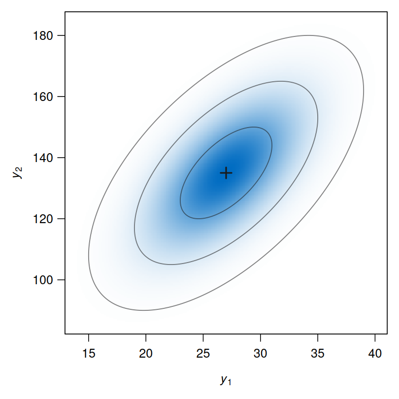
| A | B | C | D | E | F | |
|---|---|---|---|---|---|---|
| 1 | Возраст | Пол | САД | ДАД | ИМТ | ХС |
| 2 | 54 | М | 138 | 86 | 29.1 | нет данных |
| 3 | 61 | Ж | 149 | NA | NULL | 5.4 |
| 4 | 999 | 136 | 92 | 27.4 | 5.8 | |
| 5 | 48 | Ж | 124 | 78 | 25.4 | |
| 6 | 59 | М | 142 | NA | NULL | 6.1 |
| 7 | 45 | Ж | 0 | 82 | 26.8 | 4.9 |
Missing data are unobserved values that would be meaningful for analysis if observed; in other words, a missing value hides a meaningful value.
Пропущенные данные – это ненаблюдаемые значения, которые имели бы содержательный смысл для анализа, если бы наблюдались; иными словами, за пропуском скрывается осмысленное значение.
Little, R. J. A., & Rubin, D. B. (2019).
Statistical Analysis with Missing Data, 3rd ed.
Definition 1.1, p. 4
\[ Y = \left[\begin{array}{rrrrr}\text{Возр} & \text{Пол} & \text{САД} & \text{ДАД} & \text{ИМТ} \\ \hline \color{#006CC2}{54} & \color{#006CC2}{1} & \color{#006CC2}{138} & \color{#006CC2}{86} & \color{#006CC2}{29.1} \\ \color{#006CC2}{61} & \color{#006CC2}{0} & \color{#006CC2}{149} & \color{#006CC2}{92} & \color{#B61A51}{28.3} \\ \color{#006CC2}{72} & \color{#006CC2}{1} & \color{#B61A51}{152} & \color{#B61A51}{90} & \color{#006CC2}{27.4} \\ \color{#006CC2}{48} & \color{#006CC2}{0} & \color{#006CC2}{124} & \color{#006CC2}{78} & \color{#006CC2}{25.4} \\ \color{#006CC2}{59} & \color{#006CC2}{1} & \color{#006CC2}{142} & \color{#B61A51}{88} & \color{#B61A51}{30.2} \\ \color{#006CC2}{45} & \color{#006CC2}{0} & \color{#B61A51}{128} & \color{#006CC2}{82} & \color{#006CC2}{26.8}\end{array}\right] \]
\[ \color{#006CC2}{Y_{\mathrm{obs}}} = \left[\begin{array}{rrrrr}\text{Возр} & \text{Пол} & \text{САД} & \text{ДАД} & \text{ИМТ} \\ \hline \color{#006CC2}{54} & \color{#006CC2}{1} & \color{#006CC2}{138} & \color{#006CC2}{86} & \color{#006CC2}{29.1} \\ \color{#006CC2}{61} & \color{#006CC2}{0} & \color{#006CC2}{149} & \color{#006CC2}{92} & \color{#B61A51}{\cdot} \\ \color{#006CC2}{72} & \color{#006CC2}{1} & \color{#B61A51}{\cdot} & \color{#B61A51}{\cdot} & \color{#006CC2}{27.4} \\ \color{#006CC2}{48} & \color{#006CC2}{0} & \color{#006CC2}{124} & \color{#006CC2}{78} & \color{#006CC2}{25.4} \\ \color{#006CC2}{59} & \color{#006CC2}{1} & \color{#006CC2}{142} & \color{#B61A51}{\cdot} & \color{#B61A51}{\cdot} \\ \color{#006CC2}{45} & \color{#006CC2}{0} & \color{#B61A51}{\cdot} & \color{#006CC2}{82} & \color{#006CC2}{26.8}\end{array}\right] \]
\[ M = \left[\begin{array}{rrrrr}\text{Возр} & \text{Пол} & \text{САД} & \text{ДАД} & \text{ИМТ} \\ \hline 0 & 0 & 0 & 0 & 0 \\ 0 & 0 & 0 & 0 & 1 \\ 0 & 0 & 1 & 1 & 0 \\ 0 & 0 & 0 & 0 & 0 \\ 0 & 0 & 0 & 1 & 1 \\ 0 & 0 & 1 & 0 & 0\end{array}\right] \]
\[ Y=(\color{#006CC2}{Y_{\mathrm{obs}}},\color{#B61A51}{Y_{\mathrm{mis}}}) \]
\[ \color{#006CC2}{M}=(\color{#006CC2}{m^{(i)}_{j}}),\qquad \color{#006CC2}{m^{(i)}_{j}}=\begin{cases}\color{#006CC2}{1},&\color{#B61A51}{Y^{(i)}_{j}}\text{ пропущено},\\\color{#006CC2}{0},&\color{#006CC2}{Y^{(i)}_{j}}\text{ наблюдается}.\end{cases} \]
Обозначение
\(f(y)\) – функция вероятности или плотность
\(\Pr(Y=y)=f(y)\) – та же функция вероятности для дискретной \(Y\)
\(f(y\mid\theta)\) – функция вероятности или плотность при заданных параметрах \(\theta\)
для дискретных величин \(\int\) заменяется на \(\sum\)
Маргинальное распределение
\(f(y_1)=\displaystyle\int f(y_1,y_2)\,dy_2\)
(1)
Цепное правило
\(f(y_1,y_2)=f(y_1)\,f(y_2\mid y_1)\)
\(f(y_1,\dots,y_p)=f(y_1)\,f(y_2\mid y_1)\cdots f(y_p\mid y_1,\dots,y_{p-1})\)
(2)
Независимость
\(Y_1\perp Y_2\iff f(y_1,y_2)=f(y_1)\,f(y_2)\)
\(f(\mathbf y^{(1)},\dots,\mathbf y^{(n)}\mid\theta)=\prod_{i=1}^{n}f(\mathbf y^{(i)}\mid\theta)\)
(3)
Условная независимость
\(Y_1\perp Y_2\mid Y_3\iff f(y_1\mid y_2,y_3)=f(y_1\mid y_3)\)
(4)
Условное ожидание
\(\mathrm E(Y_2\mid Y_1=y_1)=\displaystyle\int y_2\,f(y_2\mid y_1)\,dy_2\) – функция от \(y_1\)
(5)
Дисперсия
\(\operatorname{Var}(Y)=\mathrm E(Y^2)-(\mathrm E\,Y)^2\)
\(\mathrm E(Y_2^2\mid Y_1)=\operatorname{Var}(Y_2\mid Y_1)+\mathrm E(Y_2\mid Y_1)^2\)
(6)
Закон повторного ожидания
\(\mathrm E(Y_2)=\mathrm E\big[\mathrm E(Y_2\mid Y_1)\big]\)
(7)
Одномерное
\[Y\sim\mathcal N(\mu,\sigma^2)\] \[f(y)=\frac{1}{\sqrt{2\pi}\,\sigma}\exp\!\left(-\frac{(y-\mu)^2}{2\sigma^2}\right)\]
Многомерное
\[Y=(Y_1,\dots,Y_p)^{\top}\sim\mathcal N_p(\mu,\Sigma)\] \[f(y)=\frac{1}{(2\pi)^{p/2}\,|\Sigma|^{1/2}}\exp\!\left(-\frac12\,(y-\mu)^{\top}\Sigma^{-1}(y-\mu)\right)\]
Двумерное
\[p=2\] \[\mu=\begin{pmatrix}\mu_1\\\mu_2\end{pmatrix},\qquad \Sigma=\begin{pmatrix}\sigma_1^2&\rho\sigma_1\sigma_2\\\rho\sigma_1\sigma_2&\sigma_2^2\end{pmatrix}\]

\(\mu_1=27\), \(\mu_2=135\), \(\sigma_1=4\), \(\sigma_2=15\), \(\rho=0.6\)
\[\begin{pmatrix}Y_1\\Y_2\end{pmatrix}\sim\mathcal N_2\!\left( \begin{pmatrix}\mu_1\\\mu_2\end{pmatrix}, \begin{pmatrix}\sigma_1^2&\rho\sigma_1\sigma_2\\\rho\sigma_1\sigma_2&\sigma_2^2\end{pmatrix}\right)\]
Параметры (\(\theta\)): \((\mu_1,\mu_2,\sigma_1^2,\sigma_2^2,\rho)\)
\[f(y_1,y_2)=f(y_1)\,f(y_2\mid y_1)\]
\[Y_1\sim\mathcal N(\mu_1,\sigma_1^2),\quad Y_2\mid Y_1\sim\mathcal N(\beta_0+\beta_1Y_1,\ \sigma_{2\mid1}^2)\] \[\mathrm E(Y_2\mid Y_1)=\beta_0+\beta_1Y_1=\mu_2+\rho\,\frac{\sigma_2}{\sigma_1}\,(Y_1-\mu_1)\] \[\operatorname{Var}(Y_2\mid Y_1)=\sigma_{2\mid1}^2=\sigma_2^2\,(1-\rho^2)\]
Параметры (\(\theta\)): \((\mu_1,\sigma_1^2,\beta_0,\beta_1,\sigma_{2\mid1}^2)\)
\[f(y_1,y_2)=f(y_2)\,f(y_1\mid y_2)\]
\[Y_2\sim\mathcal N(\mu_2,\sigma_2^2),\quad Y_1\mid Y_2\sim\mathcal N(\gamma_0+\gamma_1Y_2,\ \sigma_{1\mid2}^2)\] \[\mathrm E(Y_1\mid Y_2)=\gamma_0+\gamma_1Y_2=\mu_1+\rho\,\frac{\sigma_1}{\sigma_2}\,(Y_2-\mu_2)\] \[\operatorname{Var}(Y_1\mid Y_2)=\sigma_{1\mid2}^2=\sigma_1^2\,(1-\rho^2)\]
Параметры (\(\theta\)): \((\mu_2,\sigma_2^2,\gamma_0,\gamma_1,\sigma_{1\mid2}^2)\)
\[ \begin{bmatrix}X^{(i)}\\Y^{(i)}\end{bmatrix} =\begin{bmatrix}\mathrm{ИМТ}^{(i)}\\\mathrm{САД}^{(i)}\end{bmatrix} \overset{\mathrm{iid}}{\sim}\mathcal N_2\!\left( \begin{bmatrix}27\\135\end{bmatrix}, \begin{bmatrix}16&36\\36&225\end{bmatrix}\right),\qquad n=1000. \]
Параметры
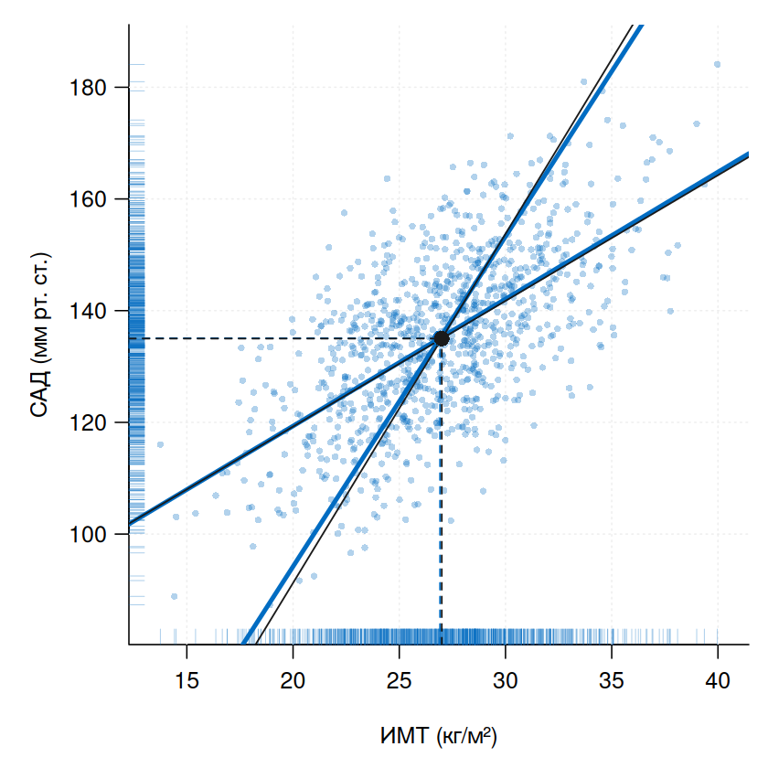
| Параметры | \(\boldsymbol{\theta}\) | \(\boldsymbol{\hat\theta}_{\mathbf{CD}}\) |
|---|---|---|
| \(\mu_{\text{ИМТ}}\) | 27.0 | 26.9 |
| \(\sigma_{\text{ИМТ}}\) | 4.0 | 4.1 |
| \(\mu_{\text{САД}}\) | 135.0 | 135.1 |
| \(\sigma_{\text{САД}}\) | 15.0 | 15.0 |
| \(\rho_{XY}\) | 0.600 | 0.620 |
| \(\mathrm{E}(\text{САД}\mid\text{ИМТ})\) | 74.25 + 2.25 × ИМТ | 73.87 + 2.27 × ИМТ |
| \(\mathrm{E}(\text{ИМТ}\mid\text{САД})\) | 5.40 + 0.160 × САД | 4.06 + 0.169 × САД |
Механизм пропусков – распределение индикаторов \(M\):
\[\Pr(M\mid Y,\psi)=\Pr(M\mid Y_{\mathrm{obs}},Y_{\mathrm{mis}},\psi)\]
\[f(M\mid Y,\psi)=f(M\mid Y_{\mathrm{obs}},Y_{\mathrm{mis}},\psi)\]
| Selected works | Citations |
|---|---|
| Missing data | |
| Missingness mechanisms and ignorability – Rubin (1976), Biometrika | 16 954 |
| EM algorithm – Dempster, Laird, Rubin (1977), JRSS B | 80 209 |
| ECM algorithm – Meng, Rubin (1993), Biometrika | 2 734 |
| Multiple imputation after 18+ years – Rubin (1996), JASA | 5 915 |
| Statistical Analysis with Missing Data – Little, Rubin (1987; 3rd ed. 2019) | 44 275 |
| Causal inference | |
| Potential outcomes – Rubin (1974), J Educ Psychol | 15 682 |
| Bayesian inference for causal effects – Rubin (1978), Ann Stat | 4 010 |
| Propensity score – Rosenbaum, Rubin (1983), Biometrika | 47 928 |
| Instrumental variables – Angrist, Imbens, Rubin (1996), JASA | 9 537 |
| Causal Inference for Statistics, Social, and Biomedical Sciences – Imbens, Rubin (2015) | 9 682 |
| Bayesian statistics | |
| Bayesian bootstrap – Rubin (1981), Ann Stat | 2 165 |
| Posterior predictive checks – Rubin (1984), Ann Stat | 2 150 |
| R̂ convergence diagnostic – Gelman, Rubin (1992), Stat Sci | 23 787 |
| Bayesian Data Analysis – Gelman, Carlin, Stern, Rubin (1995; 3rd ed. 2013) | 47 611 |
Citations: Google Scholar, 26 Nov 2026.
MCAR
Missing Completely at Random
\[\Pr(M\mid Y_{\mathrm{obs}},Y_{\mathrm{mis}},\psi)=\Pr(M\mid\psi)\]
MAR
Missing at Random
\[\Pr(M\mid Y_{\mathrm{obs}},Y_{\mathrm{mis}},\psi)=\Pr(M\mid Y_{\mathrm{obs}},\psi)\]
MNAR (NMAR)
Missing Not at Random
\[\Pr(M\mid Y_{\mathrm{obs}},Y_{\mathrm{mis}},\psi)\neq\Pr(M\mid Y_{\mathrm{obs}},\psi)\]
Ignorable ≈ MCAR, MAR
Non-ignorable ≈ MNAR
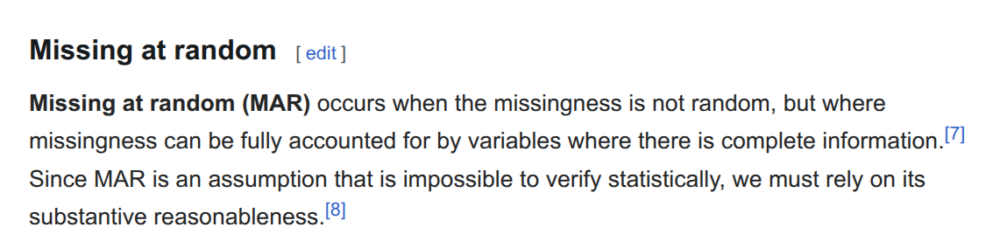
Wikipedia, “Missing data”, section “Missing at random”, CC BY-SA 4.0.
As a field, statistics is really bad at naming things.
Heiss, A. (2022). Marginal and conditional effects for GLMMs with {marginaleffects}.
| Rubin | Hand | Probability of missingness depends on |
|---|---|---|
| MCARMissing Completely at Random | NDDNot Data Dependent | neither observed nor unobserved values |
| MARMissing at Random | SDDSeen Data Dependent | observed values only |
| MNARMissing Not at Random | UDDUnseen Data Dependent | unobserved values, even given observed ones |
Hand, D. J. (2020).
Dark Data: Why What You Don’t Know Matters.
Princeton University Press, ch. 8.
\(\Pr(M^{(i)}_{\text{САД}}=1)=0.35\).
Пропущено 34.0%; \(n_{\mathrm{obs}}=\,\)660 полных пар.
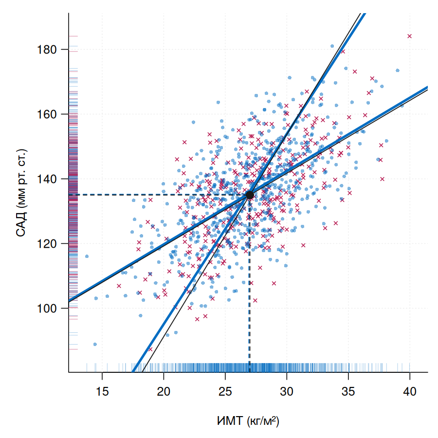
| Параметры | \(\boldsymbol{\theta}\) | \(\boldsymbol{\hat\theta}_{\mathbf{CD}}\) | \(\boldsymbol{\hat\theta}_{\mathbf{CC}}\) |
|---|---|---|---|
| \(\mu_{\text{ИМТ}}\) | 27.0 | 26.9 | 26.9 |
| \(\sigma_{\text{ИМТ}}\) | 4.0 | 4.1 | 4.1 |
| \(\mu_{\text{САД}}\) | 135.0 | 135.1 | 135.2 |
| \(\sigma_{\text{САД}}\) | 15.0 | 15.0 | 15.0 |
| \(\rho_{XY}\) | 0.600 | 0.620 | 0.621 |
| \(\mathrm{E}(\text{САД}\mid\text{ИМТ})\) | 74.25 + 2.25 × ИМТ | 73.87 + 2.27 × ИМТ | 74.43 + 2.27 × ИМТ |
| \(\mathrm{E}(\text{ИМТ}\mid\text{САД})\) | 5.40 + 0.160 × САД | 4.06 + 0.169 × САД | 3.83 + 0.170 × САД |
\(\operatorname{logit}\Pr(M^{(i)}_{\text{САД}}=1\mid Y^{(i)}_{\text{ИМТ}})=-13+0.45\times Y^{(i)}_{\text{ИМТ}}\).
Пропущено 35.1%; \(n_{\mathrm{obs}}=\,\)649 полных пар.
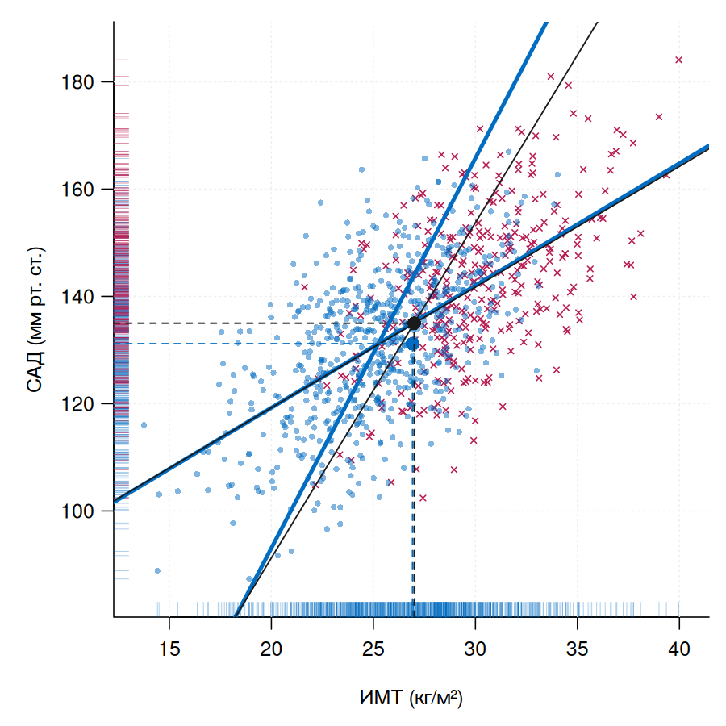
| Параметры | \(\boldsymbol{\theta}\) | \(\boldsymbol{\hat\theta}_{\mathbf{CD}}\) | \(\boldsymbol{\hat\theta}_{\mathbf{CC}}\) |
|---|---|---|---|
| \(\mu_{\text{ИМТ}}\) | 27.0 | 26.9 | 26.9 |
| \(\sigma_{\text{ИМТ}}\) | 4.0 | 4.1 | 4.1 |
| \(\mu_{\text{САД}}\) | 135.0 | 135.1 | 131.2 |
| \(\sigma_{\text{САД}}\) | 15.0 | 15.0 | 13.9 |
| \(\rho_{XY}\) | 0.600 | 0.620 | 0.560 |
| \(\mathrm{E}(\text{САД}\mid\text{ИМТ})\) | 74.25 + 2.25 × ИМТ | 73.87 + 2.27 × ИМТ | 73.67 + 2.28 × ИМТ |
| \(\mathrm{E}(\text{ИМТ}\mid\text{САД})\) | 5.40 + 0.160 × САД | 4.06 + 0.169 × САД | 7.20 + 0.138 × САД |
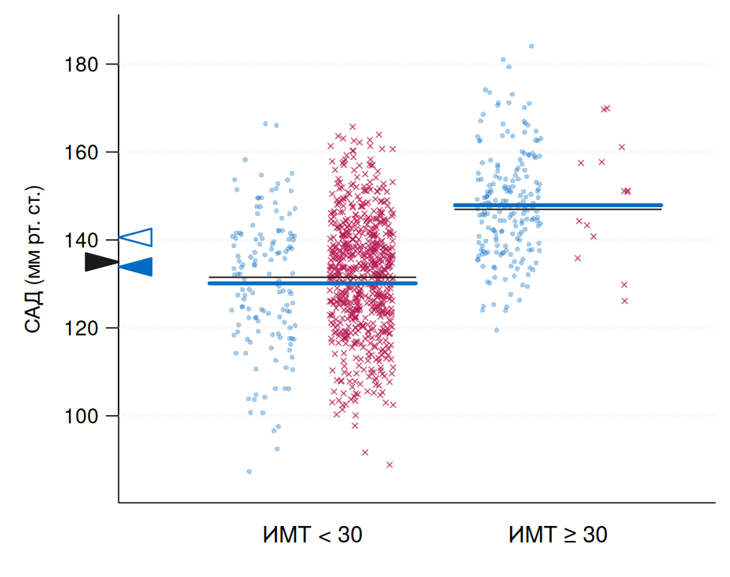
\[\Pr\bigl(M^{(i)}_{\text{САД}}=1\mid Y^{(i)}_{\text{ИМТ}}<30\bigr)=0.80\]
\[\Pr\bigl(M^{(i)}_{\text{САД}}=1\mid Y^{(i)}_{\text{ИМТ}}\ge 30\bigr)=0.10\]
\[\widehat\pi_g=\frac{n_{\mathrm{obs},\,g}}{n_g},\qquad w^{(i)}=\frac{1}{\widehat\pi_{g(i)}}\]
\[\widehat\mu_{\text{САД},\,\mathrm{CC}}=\frac{1}{n_{\mathrm{obs}}}\sum_{i:\,M^{(i)}_{\text{САД}}=0}Y^{(i)}_{\text{САД}}\]
\[\widehat\mu_{\text{САД},\,\mathrm{IPW}}=\frac{\sum_{i:\,M^{(i)}_{\text{САД}}=0}w^{(i)}\,Y^{(i)}_{\text{САД}}}{\sum_{i:\,M^{(i)}_{\text{САД}}=0}w^{(i)}} =\sum_{g}\frac{n_g}{n}\,\overline{Y}_{\text{САД},\,g}^{\,\mathrm{CC}}\]
(7)
| Группа | \(n\) | \(n_{\mathrm{obs}}\) | \(\hat\pi\) | \(w=1/\hat\pi\) | \(\boldsymbol{\theta}\) | \(\boldsymbol{\hat\theta}_{\mathbf{CD}}\) | \(\boldsymbol{\hat\theta}_{\mathbf{CC}}\) | \(\boldsymbol{\hat\theta}_{\mathbf{IPW}}\) |
|---|---|---|---|---|---|---|---|---|
| ИМТ < 30 | 789 | 138 | 0.17 | 5.72 | 131.5 | 131.6 | 130.1 | 130.1 |
| ИМТ ≥ 30 | 211 | 197 | 0.93 | 1.07 | 147.0 | 148.0 | 147.9 | 147.9 |
| Все | 1000 | 335 | – | – | 135.0 | 135.1 | 140.6 | 133.9 |
\(\operatorname{logit}\Pr(M^{(i)}_{\text{САД}}=1\mid Y^{(i)}_{\text{САД}})=-17.1+0.12\times Y^{(i)}_{\text{САД}}\).
Пропущено 35.5%; \(n_{\mathrm{obs}}=\,\)645 полных пар.
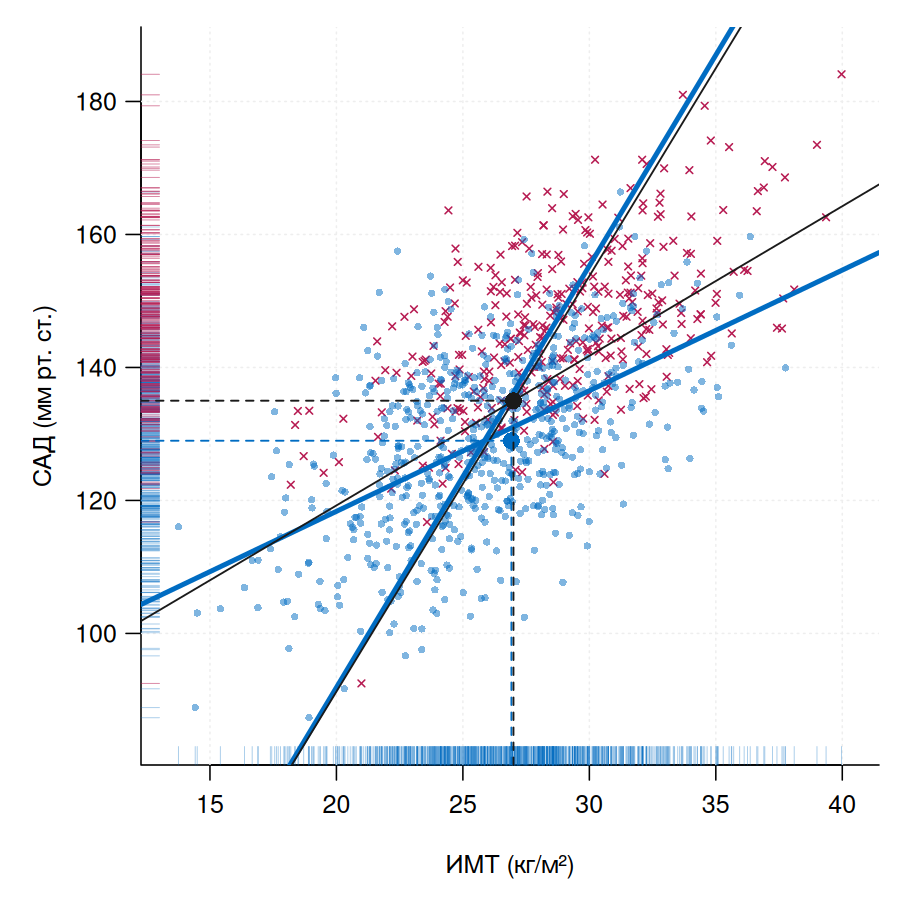
| Параметры | \(\boldsymbol{\theta}\) | \(\boldsymbol{\hat\theta}_{\mathbf{CD}}\) | \(\boldsymbol{\hat\theta}_{\mathbf{CC}}\) |
|---|---|---|---|
| \(\mu_{\text{ИМТ}}\) | 27.0 | 26.9 | 26.9 |
| \(\sigma_{\text{ИМТ}}\) | 4.0 | 4.1 | 4.1 |
| \(\mu_{\text{САД}}\) | 135.0 | 135.1 | 129.0 |
| \(\sigma_{\text{САД}}\) | 15.0 | 15.0 | 12.9 |
| \(\rho_{XY}\) | 0.600 | 0.620 | 0.535 |
| \(\mathrm{E}(\text{САД}\mid\text{ИМТ})\) | 74.25 + 2.25 × ИМТ | 73.87 + 2.27 × ИМТ | 82.08 + 1.81 × ИМТ |
| \(\mathrm{E}(\text{ИМТ}\mid\text{САД})\) | 5.40 + 0.160 × САД | 4.06 + 0.169 × САД | 5.51 + 0.158 × САД |
naniar::mcar_test());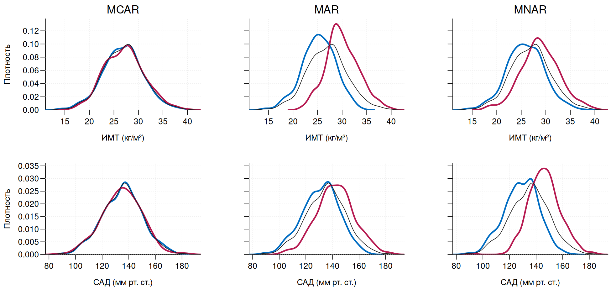
(в общем случае не работают при MAR)
| Параметры | \(\boldsymbol{\theta}\) | \(\boldsymbol{\hat\theta}_{\mathbf{CD}}\) | \(\boldsymbol{\hat\theta}_{\mathbf{CC}}\) MCAR |
\(\boldsymbol{\hat\theta}_{\mathbf{CC}}\) MAR |
\(\boldsymbol{\hat\theta}_{\mathbf{CC}}\) MNAR |
|---|---|---|---|---|---|
| \(\mu_{\text{ИМТ}}\) | 27.0 | 26.9 | 26.9 | 26.9 | 26.9 |
| \(\sigma_{\text{ИМТ}}\) | 4.0 | 4.1 | 4.1 | 4.1 | 4.1 |
| \(\mu_{\text{САД}}\) | 135.0 | 135.1 | 135.2 | 131.2 | 129.0 |
| \(\sigma_{\text{САД}}\) | 15.0 | 15.0 | 15.0 | 13.9 | 12.9 |
| \(\rho_{XY}\) | 0.600 | 0.620 | 0.621 | 0.560 | 0.535 |
| \(\mathrm{E}(\text{САД}\mid\text{ИМТ})\) | 74.25 + 2.25 × ИМТ | 73.87 + 2.27 × ИМТ | 74.43 + 2.27 × ИМТ | 73.67 + 2.28 × ИМТ | 82.08 + 1.81 × ИМТ |
| \(\mathrm{E}(\text{ИМТ}\mid\text{САД})\) | 5.40 + 0.160 × САД | 4.06 + 0.169 × САД | 3.83 + 0.170 × САД | 7.20 + 0.138 × САД | 5.51 + 0.158 × САД |
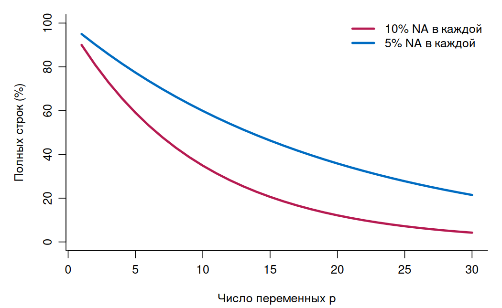
20 строк × 4 переменные: наблюдается 65 из 80 значений (81.25%).
lm(Y1 ~ Y2 + Y3 + Y4): в модель попадают 5 из 20 строк (25%).
При независимых пропусках доли \(q\) в каждой из \(p\) переменных: \(\Pr(M^{(i)}_{1}=\dots=M^{(i)}_{p}=0)=(1-q)^p\).
Несмещенные оценки, но с потерей эффективности
Complete case – оптимальный метод
| (Intercept) | Y2 | Y3 | Y4 |
|---|---|---|---|
| 2.030 | 0.976 | 0.500 | −0.477 |
| (Intercept) | Y2 | Y3 | Y4 |
|---|---|---|---|
| 2.030 | 0.976 | 0.500 | −0.477 |
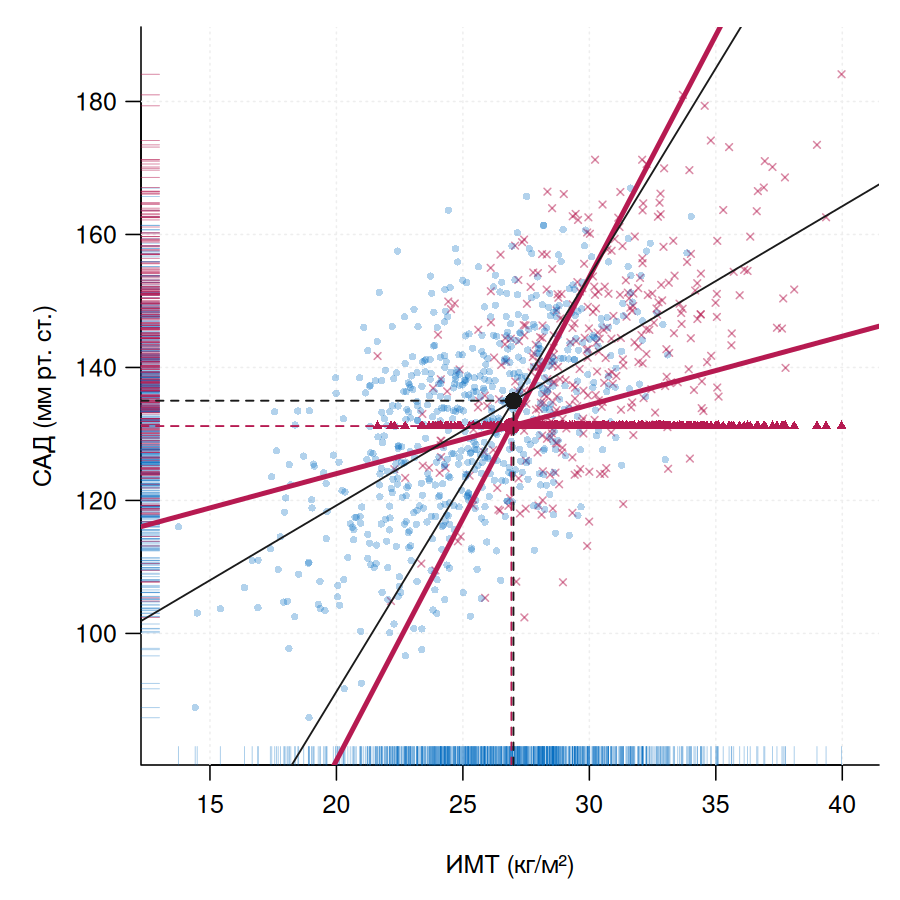
| Параметры | \(\boldsymbol{\theta}\) | \(\boldsymbol{\hat\theta}_{\mathbf{CD}}\) | \(\boldsymbol{\hat\theta}_{\mathbf{MI}}\) |
|---|---|---|---|
| \(\mu_{\text{ИМТ}}\) | 27.0 | 26.9 | 26.9 |
| \(\sigma_{\text{ИМТ}}\) | 4.0 | 4.1 | 4.1 |
| \(\mu_{\text{САД}}\) | 135.0 | 135.1 | 131.2 |
| \(\sigma_{\text{САД}}\) | 15.0 | 15.0 | 11.2 |
| \(\rho_{XY}\) | 0.600 | 0.620 | 0.377 |
| \(\mathrm{E}(\text{САД}\mid\text{ИМТ})\) | 74.25 + 2.25 × ИМТ | 73.87 + 2.27 × ИМТ | 103.38 + 1.03 × ИМТ |
| \(\mathrm{E}(\text{ИМТ}\mid\text{САД})\) | 5.40 + 0.160 × САД | 4.06 + 0.169 × САД | 8.87 + 0.138 × САД |
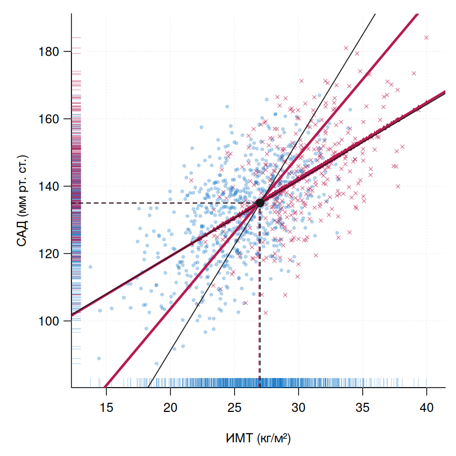
| Параметры | \(\boldsymbol{\theta}\) | \(\boldsymbol{\hat\theta}_{\mathbf{CD}}\) | \(\boldsymbol{\hat\theta}_{\mathbf{RI}}\) |
|---|---|---|---|
| \(\mu_{\text{ИМТ}}\) | 27.0 | 26.9 | 26.9 |
| \(\sigma_{\text{ИМТ}}\) | 4.0 | 4.1 | 4.1 |
| \(\mu_{\text{САД}}\) | 135.0 | 135.1 | 135.0 |
| \(\sigma_{\text{САД}}\) | 15.0 | 15.0 | 13.1 |
| \(\rho_{XY}\) | 0.600 | 0.620 | 0.708 |
| \(\mathrm{E}(\text{САД}\mid\text{ИМТ})\) | 74.25 + 2.25 × ИМТ | 73.87 + 2.27 × ИМТ | 73.67 + 2.28 × ИМТ |
| \(\mathrm{E}(\text{ИМТ}\mid\text{САД})\) | 5.40 + 0.160 × САД | 4.06 + 0.169 × САД | −2.81 + 0.220 × САД |
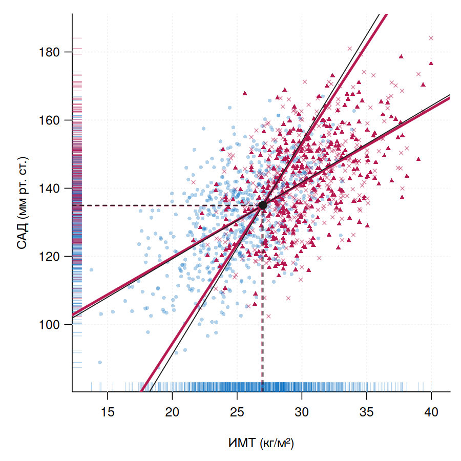
| Параметры | \(\boldsymbol{\theta}\) | \(\boldsymbol{\hat\theta}_{\mathbf{CD}}\) | \(\boldsymbol{\hat\theta}_{\mathbf{SRI}}\) |
|---|---|---|---|
| \(\mu_{\text{ИМТ}}\) | 27.0 | 26.9 | 26.9 |
| \(\sigma_{\text{ИМТ}}\) | 4.0 | 4.1 | 4.1 |
| \(\mu_{\text{САД}}\) | 135.0 | 135.1 | 134.8 |
| \(\sigma_{\text{САД}}\) | 15.0 | 15.0 | 14.6 |
| \(\rho_{XY}\) | 0.600 | 0.620 | 0.611 |
| \(\mathrm{E}(\text{САД}\mid\text{ИМТ})\) | 74.25 + 2.25 × ИМТ | 73.87 + 2.27 × ИМТ | 75.96 + 2.19 × ИМТ |
| \(\mathrm{E}(\text{ИМТ}\mid\text{САД})\) | 5.40 + 0.160 × САД | 4.06 + 0.169 × САД | 3.86 + 0.171 × САД |
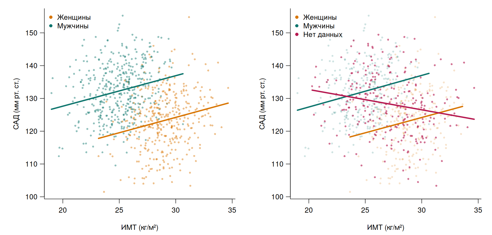
| Y | X | Z |
|---|---|---|
| 12.4 | 0 | 3.1 |
| 15.1 | 1 | NA |
| 11.8 | 0 | 2.7 |
| 14.6 | 1 | 4.0 |
| 13.2 | 0 | NA |
| 16.0 | 1 | 3.5 |
| Y | X | Z | MZ |
|---|---|---|---|
| 12.4 | 0 | 3.1 | 0 |
| 15.1 | 1 | 0 | 1 |
| 11.8 | 0 | 2.7 | 0 |
| 14.6 | 1 | 4.0 | 0 |
| 13.2 | 0 | 0 | 1 |
| 16.0 | 1 | 3.5 | 0 |
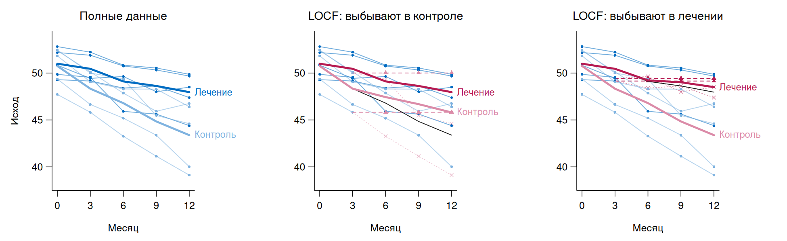
\[L(\theta;Y)=f(Y\mid\theta)\]
\[\widehat\theta_{\mathrm{ML}}=\arg\max_\theta\log L(\theta;Y)\]
При корректной, идентифицируемой модели и условиях регулярности:
Одномерное нормальное
\[Y^{(i)}\overset{\text{i.i.d.}}{\sim}\mathcal N(\mu,\sigma^2),\qquad \theta=(\mu,\sigma^2)\]
\[L(\theta;\mathbf y)=\prod_{i=1}^{n}f\bigl(y^{(i)}\mid\mu,\sigma^2\bigr)\]
\[\widehat\mu=\bar y=\frac1n\sum_{i=1}^{n}y^{(i)}\]
\[\widehat\sigma^2=\frac1n\sum_{i=1}^{n}\bigl(y^{(i)}-\bar y\bigr)^2\]
Двумерное нормальное
\[\mathbf y^{(i)}=\bigl(y^{(i)}_1,y^{(i)}_2\bigr)^{\top}\overset{\text{i.i.d.}}{\sim}\mathcal N_2(\boldsymbol\mu,\Sigma),\qquad \theta=(\boldsymbol\mu,\Sigma)\]
\[L(\theta;\mathbf y)=\prod_{i=1}^{n}f\bigl(\mathbf y^{(i)}\mid\boldsymbol\mu,\Sigma\bigr)\]
(3)
\[\widehat{\boldsymbol\mu}=\bar{\mathbf y},\qquad \widehat\Sigma=\frac1n\sum_{i=1}^{n}\bigl(\mathbf y^{(i)}-\bar{\mathbf y}\bigr)\bigl(\mathbf y^{(i)}-\bar{\mathbf y}\bigr)^{\top}\]
Инвариантность
\[\widehat\beta_1=\frac{\widehat\sigma_{12}}{\widehat\sigma_1^2},\qquad \widehat\beta_0=\bar y_2-\widehat\beta_1\bar y_1,\qquad \widehat\rho=\frac{\widehat\sigma_{12}}{\widehat\sigma_1\widehat\sigma_2}\]
Наблюдаем \((\color{#006CC2}{Y_{\mathrm{obs}}},\color{#006CC2}{M})\), поэтому нужна плотность, не зависящая от пропущенных значений:
\[f(\color{#006CC2}{Y_{\mathrm{obs}}},\color{#006CC2}{M}\mid\theta,\psi)=\int f(\color{#006CC2}{Y_{\mathrm{obs}}},\color{#B61A51}{Y_{\mathrm{mis}}},\color{#006CC2}{M}\mid\theta,\psi)\,dY_{\mathrm{mis}}\]
(1)
Возможны две факторизации совместного распределения \(f(\color{#006CC2}{Y_{\mathrm{obs}}},\color{#B61A51}{Y_{\mathrm{mis}}},\color{#006CC2}{M}\mid\theta,\psi)\):
Selection model
\[f(\color{#006CC2}{Y_{\mathrm{obs}}},\color{#B61A51}{Y_{\mathrm{mis}}},\color{#006CC2}{M}\mid\theta,\psi)=f(\color{#006CC2}{Y_{\mathrm{obs}}},\color{#B61A51}{Y_{\mathrm{mis}}}\mid\theta)\,f(\color{#006CC2}{M}\mid \color{#006CC2}{Y_{\mathrm{obs}}},\color{#B61A51}{Y_{\mathrm{mis}}},\psi)\]
(2)
Pattern-mixture model
\[f(\color{#006CC2}{Y_{\mathrm{obs}}},\color{#B61A51}{Y_{\mathrm{mis}}},\color{#006CC2}{M}\mid\theta,\psi)=f(\color{#006CC2}{Y_{\mathrm{obs}}},\color{#B61A51}{Y_{\mathrm{mis}}}\mid \color{#006CC2}{M},\theta)\,f(\color{#006CC2}{M}\mid\psi)\]
(2)
\[\hphantom{\begin{array}{l}f(\color{#006CC2}{Y_{\mathrm{obs}}},\color{#006CC2}{M}\mid\theta,\psi)\\L(\theta,\psi;\color{#006CC2}{Y_{\mathrm{obs}}},\color{#006CC2}{M})\end{array}}\llap{f(\color{#006CC2}{Y_{\mathrm{obs}}},\color{#006CC2}{M}\mid\theta,\psi)}=\int f(\color{#006CC2}{Y_{\mathrm{obs}}},\color{#B61A51}{Y_{\mathrm{mis}}},\color{#006CC2}{M}\mid\theta,\psi)\,dY_{\mathrm{mis}}\]
(1)
\[\hphantom{\begin{array}{l}f(\color{#006CC2}{Y_{\mathrm{obs}}},\color{#006CC2}{M}\mid\theta,\psi)\\L(\theta,\psi;\color{#006CC2}{Y_{\mathrm{obs}}},\color{#006CC2}{M})\end{array}}=\int f(\color{#006CC2}{Y_{\mathrm{obs}}},\color{#B61A51}{Y_{\mathrm{mis}}}\mid\theta)\,f(\color{#006CC2}{M}\mid \color{#006CC2}{Y_{\mathrm{obs}}},\color{#B61A51}{Y_{\mathrm{mis}}},\psi)\,dY_{\mathrm{mis}}\]
selection model
(2)
\[\hphantom{\begin{array}{l}f(\color{#006CC2}{Y_{\mathrm{obs}}},\color{#006CC2}{M}\mid\theta,\psi)\\L(\theta,\psi;\color{#006CC2}{Y_{\mathrm{obs}}},\color{#006CC2}{M})\end{array}}=\int f(\color{#006CC2}{Y_{\mathrm{obs}}},\color{#B61A51}{Y_{\mathrm{mis}}}\mid\theta)\,f(\color{#006CC2}{M}\mid \color{#006CC2}{Y_{\mathrm{obs}}},\psi)\,dY_{\mathrm{mis}}\]
MAR
(4)
\[\hphantom{\begin{array}{l}f(\color{#006CC2}{Y_{\mathrm{obs}}},\color{#006CC2}{M}\mid\theta,\psi)\\L(\theta,\psi;\color{#006CC2}{Y_{\mathrm{obs}}},\color{#006CC2}{M})\end{array}}=f(\color{#006CC2}{M}\mid \color{#006CC2}{Y_{\mathrm{obs}}},\psi)\int f(\color{#006CC2}{Y_{\mathrm{obs}}},\color{#B61A51}{Y_{\mathrm{mis}}}\mid\theta)\,dY_{\mathrm{mis}}\]
\[\hphantom{\begin{array}{l}f(\color{#006CC2}{Y_{\mathrm{obs}}},\color{#006CC2}{M}\mid\theta,\psi)\\L(\theta,\psi;\color{#006CC2}{Y_{\mathrm{obs}}},\color{#006CC2}{M})\end{array}}=f(\color{#006CC2}{M}\mid \color{#006CC2}{Y_{\mathrm{obs}}},\psi)\,f(\color{#006CC2}{Y_{\mathrm{obs}}}\mid\theta)\]
(1)
\[\hphantom{\begin{array}{l}f(\color{#006CC2}{Y_{\mathrm{obs}}},\color{#006CC2}{M}\mid\theta,\psi)\\L(\theta,\psi;\color{#006CC2}{Y_{\mathrm{obs}}},\color{#006CC2}{M})\end{array}}\llap{L(\theta,\psi;\color{#006CC2}{Y_{\mathrm{obs}}},\color{#006CC2}{M})}=L(\psi;\color{#006CC2}{Y_{\mathrm{obs}}},\color{#006CC2}{M})\,L(\theta;\color{#006CC2}{Y_{\mathrm{obs}}})\]
\[\hphantom{\begin{array}{l}f(\color{#006CC2}{Y_{\mathrm{obs}}},\color{#006CC2}{M}\mid\theta,\psi)\\L(\theta,\psi;\color{#006CC2}{Y_{\mathrm{obs}}},\color{#006CC2}{M})\end{array}}\llap{\widehat\theta_{\mathrm{ML}}\,}=\arg\max_\theta L(\theta,\psi;\color{#006CC2}{Y_{\mathrm{obs}}},\color{#006CC2}{M})\;\overset{\theta\,{\perp\!\!\!\perp}\,\psi}{=}\;\arg\max_\theta L(\theta;\color{#006CC2}{Y_{\mathrm{obs}}})\]
\[\theta\,{\perp\!\!\!\perp}\,\psi\iff\Omega_{\theta,\psi}=\Omega_\theta\times\Omega_\psi\]
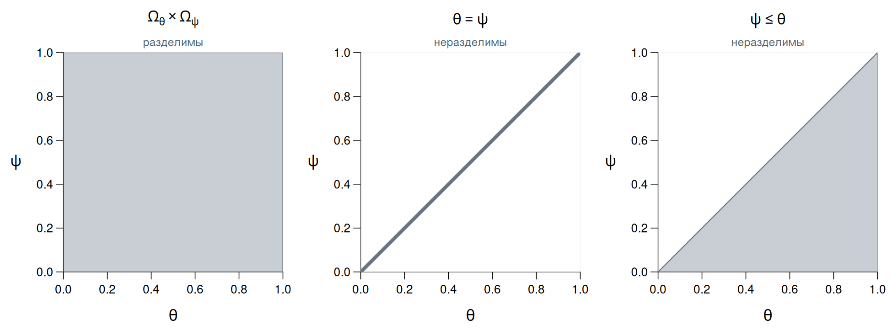
\[\begin{aligned} &Y^{(i)}\overset{\text{i.i.d.}}{\sim}\mathrm{Bernoulli}(\theta)\\ &M^{(i)}\overset{\text{i.i.d.}}{\sim}\mathrm{Bernoulli}(\psi)\\ &Y^{(i)}\perp M^{(i)}\quad(\mathrm{MCAR})\\ &\psi=\theta \end{aligned}\]
\[s=\sum_{i:\,M^{(i)}=0}Y^{(i)}\]
\[\widehat\theta_{\mathrm{obs}}=\frac{s}{n_{\mathrm{obs}}}\]
\[\widehat\theta_{\mathrm{joint}}=\frac{s+n-n_{\mathrm{obs}}}{n+n_{\mathrm{obs}}}\]
(3)
| Оценка | \(\hat{\mathrm{E}}(\hat\theta)\) | \(\hat\sigma(\hat\theta)\) |
|---|---|---|
| \(\hat\theta_{\mathrm{obs}}\) | 0.301 | 0.055 |
| \(\hat\theta_{\mathrm{joint}}\) | 0.300 | 0.035 |
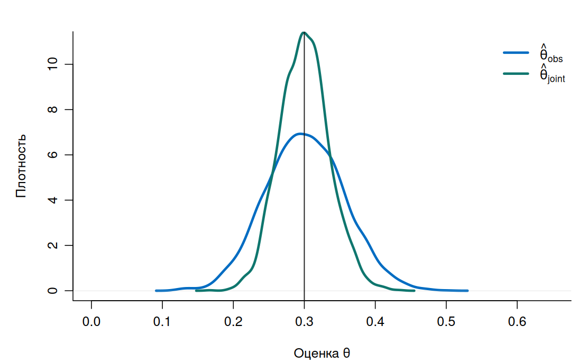
Двумерное нормальное, пропуски в САД (MAR): каноническая параметризация
\[\bigl(x^{(i)},y^{(i)}\bigr)^{\top}\overset{\text{i.i.d.}}{\sim}\mathcal N_2(\boldsymbol\mu,\Sigma),\qquad\theta=(\boldsymbol\mu,\Sigma)\]
\[L(\theta;\color{#006CC2}{Y_{\mathrm{obs}}})= \underbrace{\prod_{i:\,M^{(i)}=0}f\bigl(x^{(i)},y^{(i)}\mid\boldsymbol\mu,\Sigma\bigr)}_{n_{\mathrm{obs}}=649\ \text{полных пар}}\; \underbrace{\prod_{i:\,M^{(i)}=1}f\bigl(x^{(i)}\mid\mu_{\text{ИМТ}},\sigma^2_{\text{ИМТ}}\bigr)}_{n-n_{\mathrm{obs}}=351\ \text{строк только с ИМТ}}\]
(1, 3)
Регрессионная параметризация
\[f(x,y\mid\theta)=f\bigl(x\mid\mu_{\text{ИМТ}},\sigma^2_{\text{ИМТ}}\bigr)\, f\bigl(y\mid x,\beta_0,\beta_1,\sigma^2_{\text{САД}\mid\text{ИМТ}}\bigr),\qquad \theta=\bigl(\mu_{\text{ИМТ}},\sigma^2_{\text{ИМТ}},\beta_0,\beta_1,\sigma^2_{\text{САД}\mid\text{ИМТ}}\bigr)\]
(2)
\[L(\theta;\color{#006CC2}{Y_{\mathrm{obs}}})= \underbrace{\prod_{i=1}^{n}f\bigl(x^{(i)}\mid\mu_{\text{ИМТ}},\sigma^2_{\text{ИМТ}}\bigr)}_{n=1000}\; \underbrace{\prod_{i:\,M^{(i)}=0}f\bigl(y^{(i)}\mid x^{(i)},\beta_0,\beta_1,\sigma^2_{\text{САД}\mid\text{ИМТ}}\bigr)}_{n_{\mathrm{obs}}=649}\]
(3)
\[\widehat\mu_{\text{САД}}=\widehat\beta_0+\widehat\beta_1\widehat\mu_{\text{ИМТ}} =\bar y_{\mathrm{obs}}+\widehat\beta_1\bigl(\bar x_{\mathrm{all}}-\bar x_{\mathrm{obs}}\bigr)\]
(7)
Вторая регрессионная параметризация
\[f(x,y\mid\theta)=f\bigl(y\mid\mu_{\text{САД}},\sigma^2_{\text{САД}}\bigr)\, f\bigl(x\mid y,\beta_0,\beta_1,\sigma^2_{\text{ИМТ}\mid\text{САД}}\bigr),\qquad \theta=\bigl(\mu_{\text{САД}},\sigma^2_{\text{САД}},\beta_0,\beta_1,\sigma^2_{\text{ИМТ}\mid\text{САД}}\bigr)\]
(2)
\[\begin{aligned} L(\theta;\color{#006CC2}{Y_{\mathrm{obs}}})={}&\underbrace{\prod_{i:\,M^{(i)}=0}f\bigl(y^{(i)}\mid\mu_{\text{САД}},\sigma^2_{\text{САД}}\bigr)\, f\bigl(x^{(i)}\mid y^{(i)},\beta_0,\beta_1,\sigma^2_{\text{ИМТ}\mid\text{САД}}\bigr)}_{n_{\mathrm{obs}}=649\ \text{полных пар}}\\ &\times\underbrace{\prod_{i:\,M^{(i)}=1}\int f\bigl(y\mid\mu_{\text{САД}},\sigma^2_{\text{САД}}\bigr)\, f\bigl(x^{(i)}\mid y,\beta_0,\beta_1,\sigma^2_{\text{ИМТ}\mid\text{САД}}\bigr)\,dy}_{n-n_{\mathrm{obs}}=351\ \text{строк без САД}} \end{aligned}\]
(1, 3)
\[\int f(y)\,f\bigl(x^{(i)}\mid y\bigr)\,dy= f\bigl(x^{(i)}\mid\beta_0+\beta_1\mu_{\text{САД}},\;\beta_1^2\sigma^2_{\text{САД}}+\sigma^2_{\text{ИМТ}\mid\text{САД}}\bigr)\]
\[\widehat\mu_{\text{САД}}=\widehat\beta_0+\widehat\beta_1\widehat\mu_{\text{ИМТ}} =\bar y_{\mathrm{obs}}+\widehat\beta_1\bigl(\bar x_{\mathrm{all}}-\bar x_{\mathrm{obs}}\bigr)\]
(7)
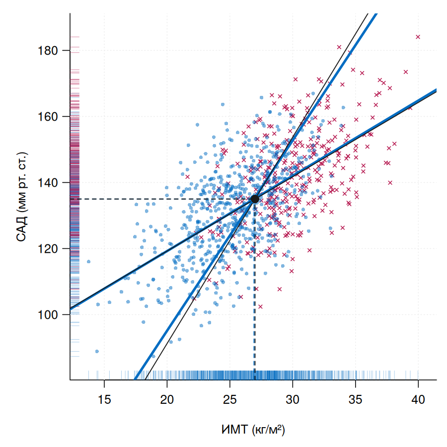
| Параметры | \(\boldsymbol{\theta}\) | \(\boldsymbol{\hat\theta}_{\mathbf{CD}}\) | \(\boldsymbol{\hat\theta}_{\mathbf{ML}}\) |
|---|---|---|---|
| \(\mu_{\text{ИМТ}}\) | 27.0 | 26.9 | 26.9 |
| \(\sigma_{\text{ИМТ}}\) | 4.0 | 4.1 | 4.1 |
| \(\mu_{\text{САД}}\) | 135.0 | 135.1 | 135.0 |
| \(\sigma_{\text{САД}}\) | 15.0 | 15.0 | 14.8 |
| \(\rho_{XY}\) | 0.600 | 0.620 | 0.629 |
| \(\mathrm{E}(\text{САД}\mid\text{ИМТ})\) | 74.25 + 2.25 × ИМТ | 73.87 + 2.27 × ИМТ | 73.67 + 2.28 × ИМТ |
| \(\mathrm{E}(\text{ИМТ}\mid\text{САД})\) | 5.40 + 0.160 × САД | 4.06 + 0.169 × САД | 3.50 + 0.173 × САД |
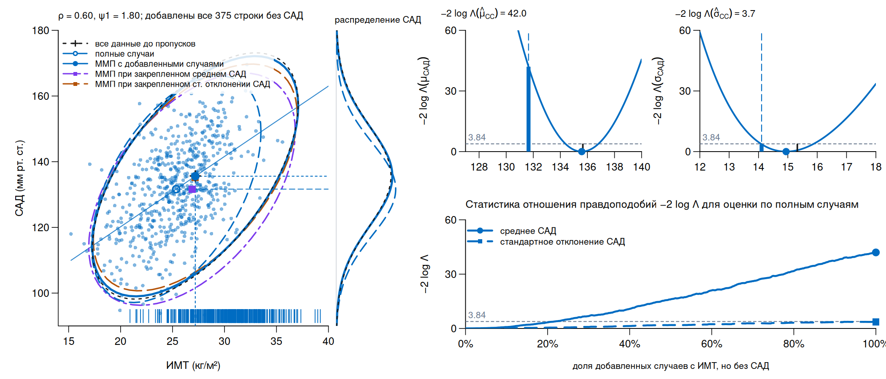
| Метод | \(\mu_{\text{САД}}\) | \(\rho_{XY}\) | \(\beta_{\text{САД}\mid\text{ИМТ}}\) | \(\beta_{\text{ИМТ}\mid\text{САД}}\) | ||||
|---|---|---|---|---|---|---|---|---|
| Покрытие (%) | Ширина | Покрытие (%) | Ширина | Покрытие (%) | Ширина | Покрытие (%) | Ширина | |
| \(\boldsymbol{\hat\theta}_{\mathbf{CD}}\) | 94.6 | 1.86 | 94.7 | 0.079 | 94.9 | 0.373 | 94.7 | 0.0265 |
| \(\boldsymbol{\hat\theta}_{\mathbf{CC}}\) | 94.8 | 2.31 | 94.9 | 0.099 | 95.1 | 0.463 | 95.1 | 0.0329 |
| \(\boldsymbol{\hat\theta}_{\mathbf{MI}}\) | 78.4 | 1.50 | 0.2 | 0.095 | 0.0 | 0.329 | 96.5 | 0.0360 |
| \(\boldsymbol{\hat\theta}_{\mathbf{RI}}\) | 84.9 | 1.64 | 4.3 | 0.067 | 79.8 | 0.300 | 0.0 | 0.0275 |
| \(\boldsymbol{\hat\theta}_{\mathbf{SRI}}\) | 87.0 | 1.86 | 85.5 | 0.079 | 84.4 | 0.373 | 88.9 | 0.0265 |
| \(\boldsymbol{\hat\theta}_{\mathbf{ML}}\) | 94.3 | 2.16 | 94.9 | 0.095 | 94.9 | 0.462 | 95.3 | 0.0301 |
| Метод | \(\mu_{\text{САД}}\) | \(\rho_{XY}\) | \(\beta_{\text{САД}\mid\text{ИМТ}}\) | \(\beta_{\text{ИМТ}\mid\text{САД}}\) | ||||
|---|---|---|---|---|---|---|---|---|
| Покрытие (%) | Ширина | Покрытие (%) | Ширина | Покрытие (%) | Ширина | Покрытие (%) | Ширина | |
| \(\boldsymbol{\hat\theta}_{\mathbf{CD}}\) | 94.6 | 1.86 | 94.7 | 0.079 | 94.9 | 0.373 | 94.7 | 0.0265 |
| \(\boldsymbol{\hat\theta}_{\mathbf{CC}}\) | 0.0 | 2.21 | 29.1 | 0.112 | 95.7 | 0.559 | 1.1 | 0.0313 |
| \(\boldsymbol{\hat\theta}_{\mathbf{MI}}\) | 0.0 | 1.40 | 0.0 | 0.108 | 0.0 | 0.327 | 4.7 | 0.0412 |
| \(\boldsymbol{\hat\theta}_{\mathbf{RI}}\) | 81.7 | 1.63 | 4.1 | 0.066 | 70.9 | 0.296 | 0.0 | 0.0276 |
| \(\boldsymbol{\hat\theta}_{\mathbf{SRI}}\) | 84.7 | 1.86 | 81.7 | 0.079 | 77.3 | 0.372 | 88.2 | 0.0265 |
| \(\boldsymbol{\hat\theta}_{\mathbf{ML}}\) | 94.1 | 2.38 | 95.1 | 0.109 | 95.7 | 0.557 | 95.5 | 0.0310 |